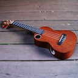
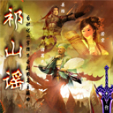
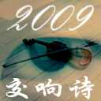
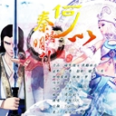

我的其他音乐主页链接：
我的虾米音乐人： https://i.xiami.com/wangquan
| 从前之前 |
Before Long Before (instrumental) |
||
|  | 风琴晚钟 |
Accordion Night (instrumental) |
|
| 易安小调 |
Yian Ditty |
||
| 影子杀 |
The Dark Templar |
||
|  | 祁山谣 |
Qishan Ditty (symphonic) |
|
|  | 2009之交响诗 |
Symphonic Poem 2009 |
|
| 听雨轩 |
Rain Pavilion |
||
| 昙花恋 |
Epiphyllum (instrumental) |
||
| 特洛伊圆舞曲 |
Troy Waltz (instrumental) |
||
| 情人的心意 |
Lover's Gift (instrumental) |
||
|  | 何以 |
He Yi |
|
| 《琴石鸣乐》文档 | The document of my album | ||
|
我的其他音乐主页链接： 我的虾米音乐人： https://i.xiami.com/wangquan |
|||